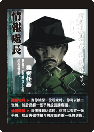

Spy Chief
Secret Green Mission
- Collect three or more red messages.
Character Abilities
- 隔牆有耳: When you test a player, you may draw two cards from the library, and then place one card from your hand onto the top of the library.
- 偷龍轉鳳: When a transmitted message reaches you, you may discard one card from your hand to switch the transmitted message with the top card of the library.
Cultural Notes
- Spy Chief's first ability, 隔牆有耳, directly translates to "the walls have ears".
- Spy Chief's second ability, 偷龍轉鳳, is a concept found in Sun Tzu's "Art of War". The literal translation is "steal the dragon and replace it with a phoenix"; This idiom can be interpreted to mean "replace the original with a fake" or simply, to perpetuate a fraud.